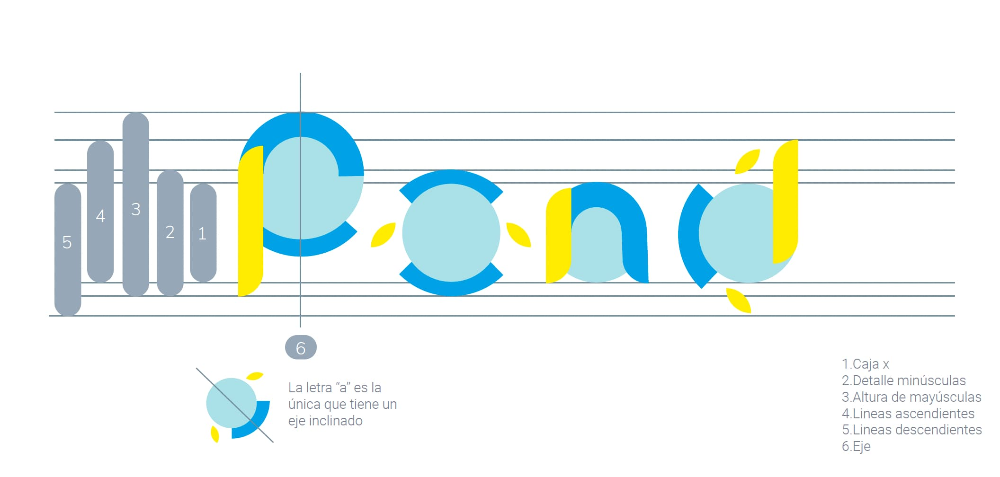
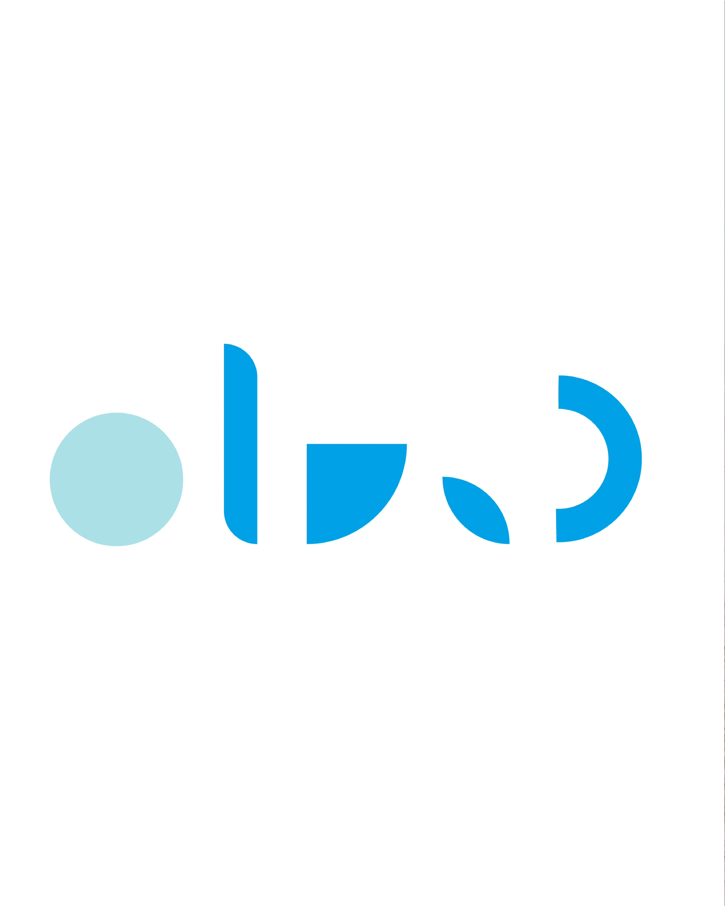
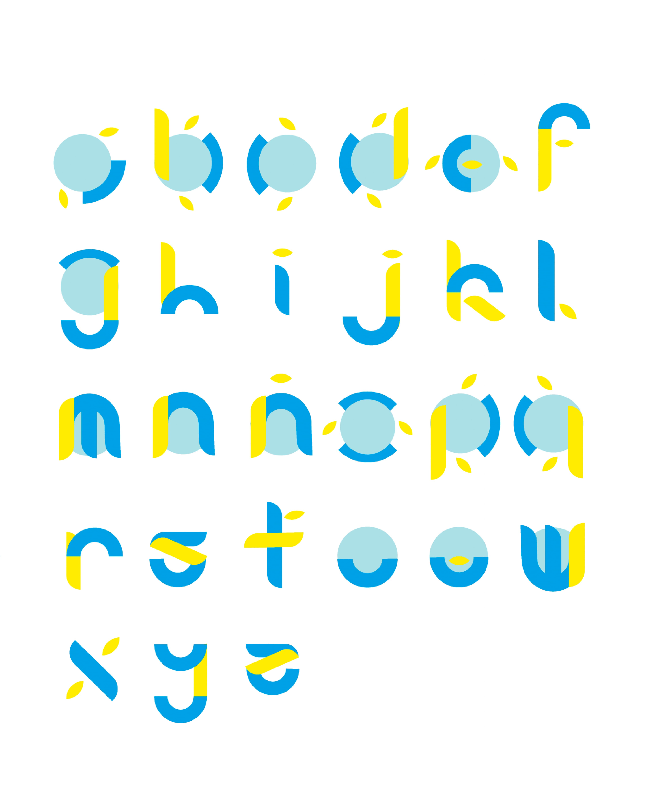

Contexto
Pond es una tipografía modular que se forma a base de una colección de formas para crear su identidad. Se inspira en la vida marítima, representando muchos de sus caracteres con elementos acuáticos. La tipografía se llama "Pond" haciendo referencia a la palabra "estanque" en inglés.
Específicamente, se propone su aplicación en una marca de trajes de baño para niños. Esto permite una marca muy especial con una identidad clara y única.
Proceso
El proceso comenzó con el diseño de los módulos básicos que forman cada letra, tomando como referencia elementos del mar: burbujas, algas, olas y formas orgánicas. La paleta de color, arena, cielo y mar, refuerza el universo visual de la marca.


Resultado
El resultado es un sistema tipográfico completo con alfabeto en mayúsculas y minúsculas, números y signos de puntuación. Su aplicación en etiquetas y packaging genera una identidad de marca coherente, lúdica y reconocible.

Ficha técnica
- Año
- 2025
- Asignatura
- Tipografía, Comunicación Visual
- Categoría
- Identidad Visual, Tipografía
- Herramientas
- Adobe Illustrator, Adobe InDesign